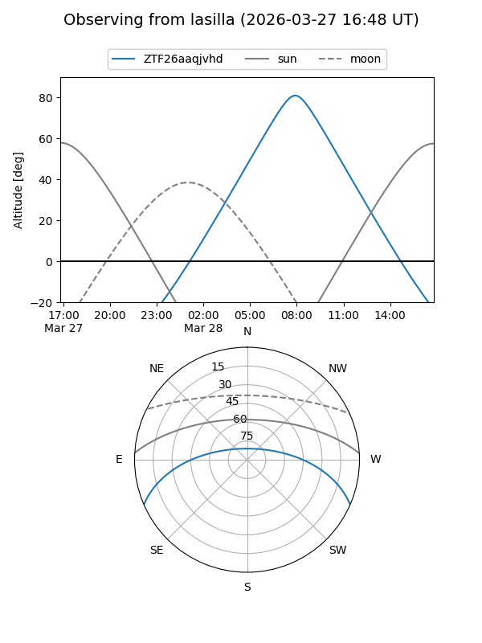
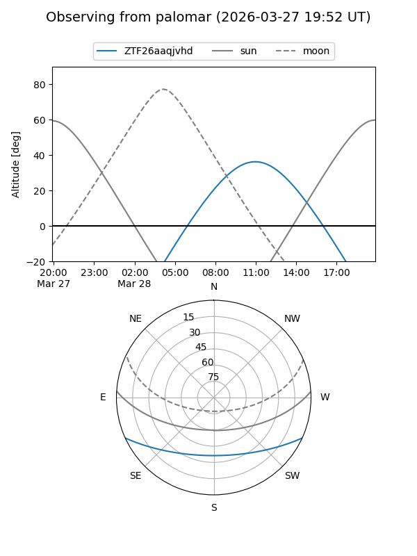

ZTF26aaqjvhd
Target ZTF26aaqjvhd at 2026-03-27 13:10
Aliases and brokers:
FINK: link
Lasair: link
ALeRCE: link
alt names
ZTF26aaqjvhd (ztf,fink_ztf)
Coordinates:
equatorial (ra, dec) = 233.0756,-20.25813
equatorial (HMS+DMS) = 15:32:18.14,-20:15:29.28
galactic (l, b) = (346.5889,+28.66480)
Flags:
Photometry:
last ztfg=18.48
1 ztfg detections
Lightcurve
Visibility


Additional plots